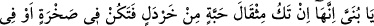
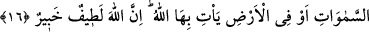

Kızlar hep anneleriyle kavga ederler, tartışırlar.
Erkek çocuklarını hep babalarının kötülüğünü isteyen görürüm.
Bu âyet kâfir ve fâsıklarla sohbeti yasakladığı gibi, sâlihlerle sohbete de teşvik
etmektedir. Çünkü yakınlık/beraberlik etkileyici, tabiatlar cezb edici ve hastalıklar
bulaşıcıdır. Bir hadîste şöyle buyrulur: “Müşriklerle aynı yerde oturmayın, onlar ile
bir araya gelmeyin. Kim onlarla aynı yerde oturur ve birlikte bulunursa, o
onlardandır, bizden değildir.”[85] Böyle yapmayın ki, bu yakınlaşma yüzünden onların
kötü ahlâkları ve çirkin huyları size bulaşmasın.
Rüzgâr havası kötü bir yerden esecek olsa,
Oranın çirkin kokularını alır getirir.
İbrahim Havvâs (k.s.) der ki: “Kalbin ilacı beştir: Düşünerek Kur’ân-ı Kerim
okumak, mideyi boş bırakmak, gece ibâdetine devam etmek, seher vakitlerinde Allah
Teâlâ’ya yalvarıp yakarmak, sâlihlerle oturup kalkmak.”
İyi insanların peşinden koşmak gerek;
Bu saâdeti talep eden mutlaka bulur.
Ama sen alçak şeytanın peşindesin;
Bilmem sâlihlere nasıl yetişeceksin?
el-Bostân’da böyle geçmektedir.
16. (Lokman, öğütlerine devamla şöyle demişti:) Yavrucuğum! Yaptığın iş (iyilik
veya kötülük), bir hardal tanesi ağırlığında bile olsa ve bu, bir kayanın içinde veya
göklerde yahut yerin derinliklerinde bulunsa, yine de Allah onu (senin karşına)
getirir. Doğrusu Allah, en ince işleri görüp bilmektedir ve her şeyden haberdardır.
Lokman (a.s.) En‘um adlı oğluna öğütlerine devamla şöyle demişti: “Yavrucuğum!”
el-İrşâd’da: “Bu âyetle, Lokman’ın öğütlerinin başında yer alan şirkin
yasaklanmasının ve ara cümle ile onun pekiştirilmesinin ardından geri kalan
tavsiyelerinin anlatımına başlanmıştır.” der.
Mukatil şöyle der: “Lokman (a.s.)’ın oğlu babasına: “Kimsenin beni göremeyeceği
yerde günah işlesem Allah onu nasıl bilir?” diye sorunca babası ona şöyle cevap
vermiştir:”